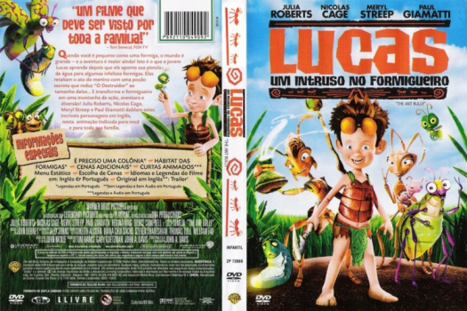

Outro Título:The Ant Bully
País:United States, 89 minutos
Idiomas falados:Inglês, Português
Gênero(s):Fantasia, Aventura, Animação, Comédia, Família
Diretor(s):John A. Davis
Escritor(es):John Nickle, John A. Davis
Codec:MPEG-2 (DVD)
Número: 5801


Certificado:
Sinopse:
Lucas é um garoto recém chegado na vizinhança com sua família. Sem a atenção de seus familiares, Lucas se diverte exterminando as formigas do jardim. Elas então botam em prática seu plano contra os maus tratos de Lucas: criam uma poção mágica que o diminuirá, fazendo com que tenha que conviver com elas para conseguir sua liberdade.
Elenco:


Tipo de mídia: DVD5,
Legendas: Inglês, Português, Sem Legendas
Alugado: Não
Tela: Anamorphic Widescreen